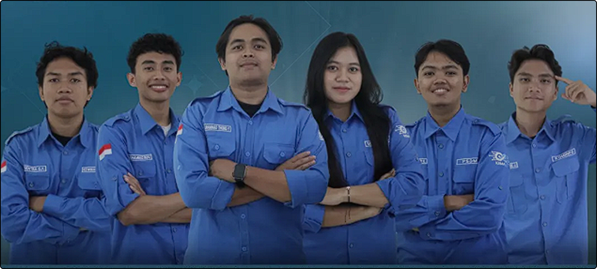
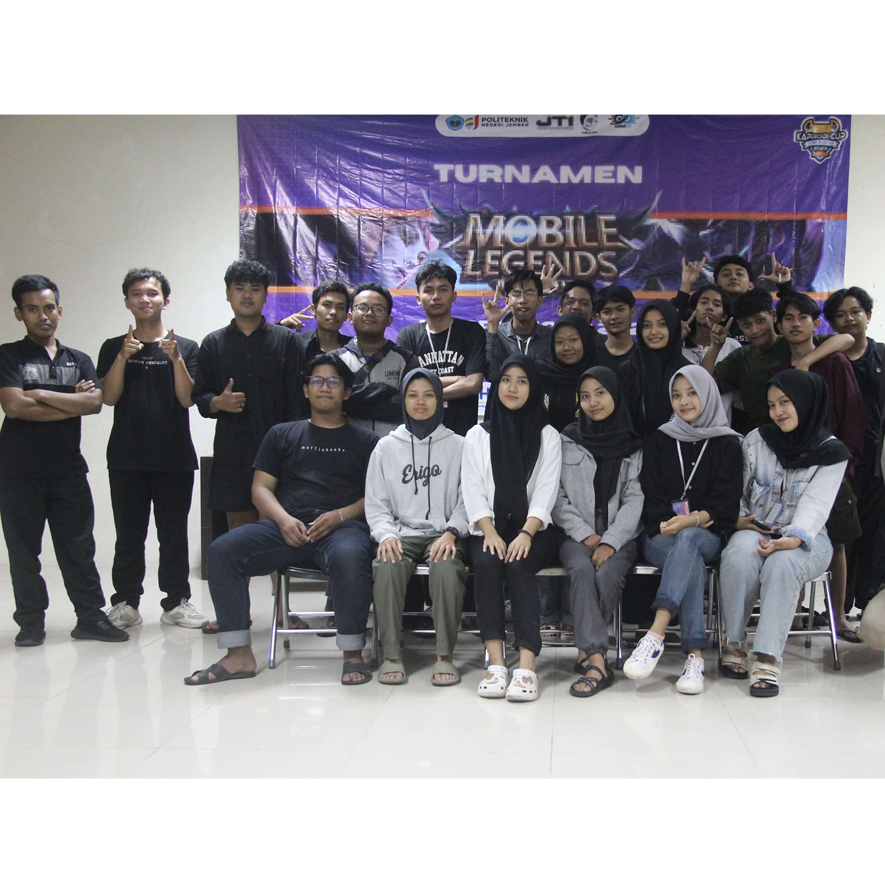
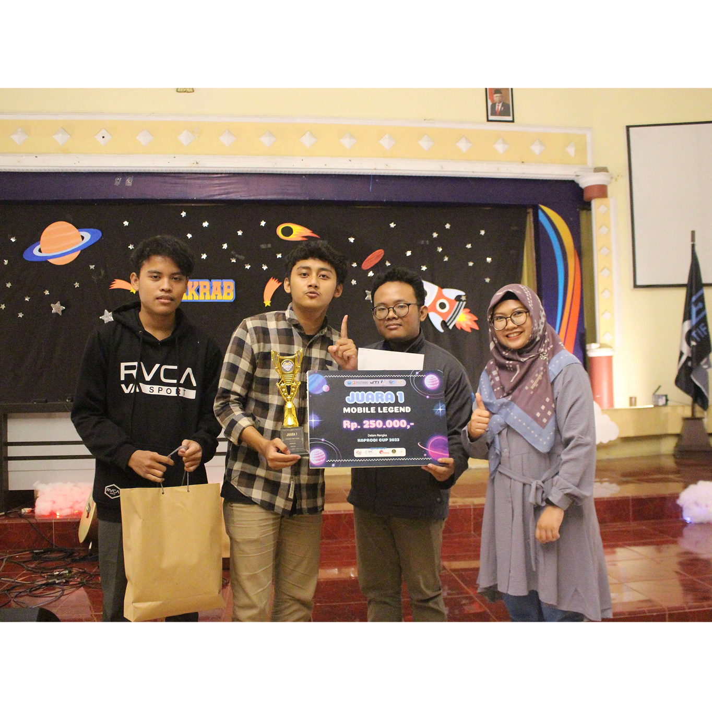
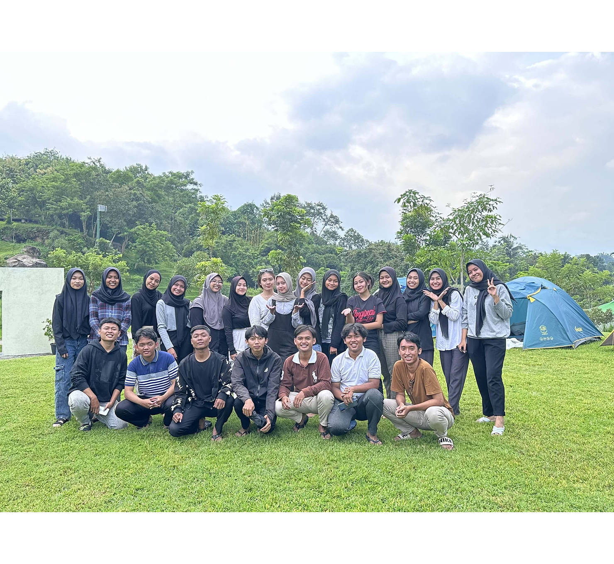
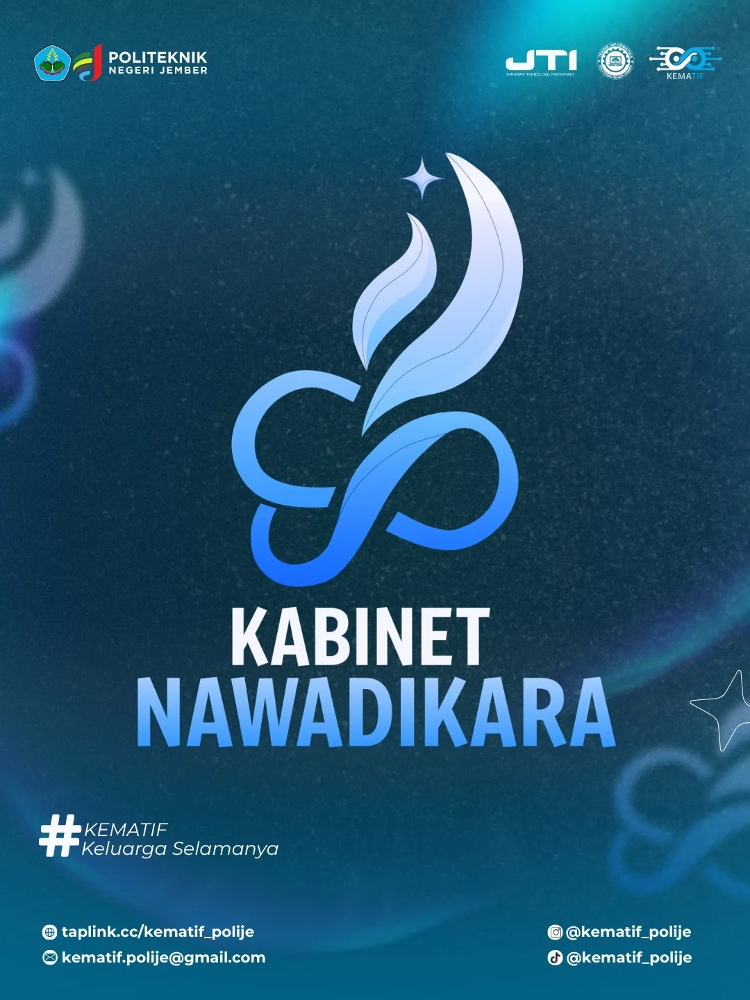

Kolaborasi
Berbagai proyek dan kegiatan bersama untuk mencapai tujuan bersama dan memperluas jaringan.
Politeknik Negeri Jember
Himpunan Prodi Keluarga Mahasiswa Teknik Informatika Politeknik Negeri Jember

Berbagai proyek dan kegiatan bersama untuk mencapai tujuan bersama dan memperluas jaringan.
Pengembangan keterampilan kepemimpinan dan manajerial dengan efektif dan berintegritas.
Ruang bagi mahasiswa untuk berinteraksi, berbagi ide, dan saling mendukung dalam lingkungan positif.
Menumbuhkan semangat dan dorongan untuk mencapai tujuan yang lebih tinggi.
Keluarga Mahasiswa Program Studi Teknik Informatika adalah ikatan yang menghimpun seluruh mahasiswa Program Studi Teknik Informatika, yang terdiri dari mahasiswa aktif dan alumni.
Organisasi ini berada dalam naungan Keluarga Mahasiswa Jurusan Teknologi Informasi Politeknik Negeri Jember.
Kompetisi dan kegiatan bersama anggota.

Momen apresiasi dan pengakuan prestasi anggota.

Aktivitas yang memperkuat ikatan anggota.


Kabinet Nawadikara menampilkan wajah organisasi yang modern, rapi, dan siap diakses oleh seluruh anggota.
Lihat Struktur Lengkap